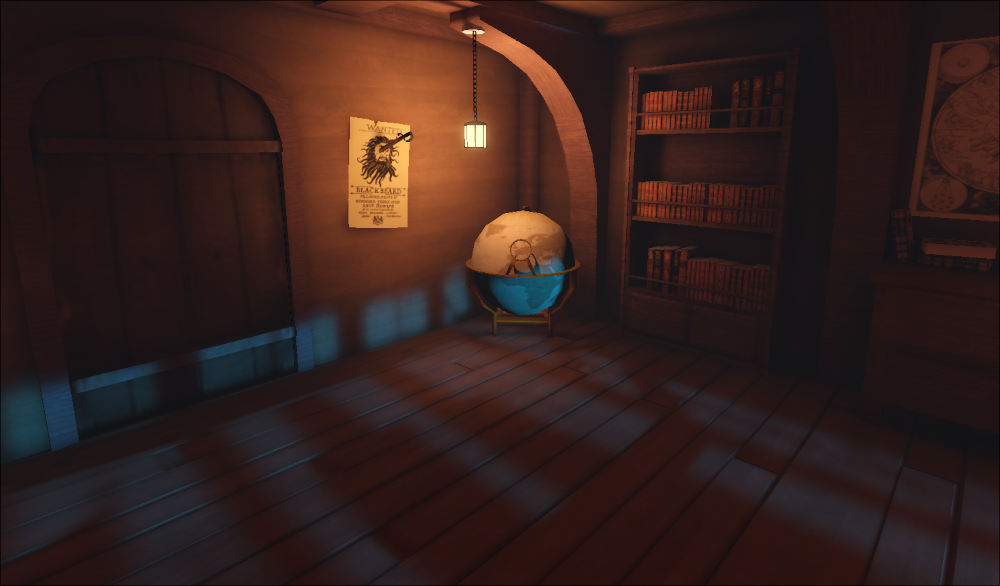
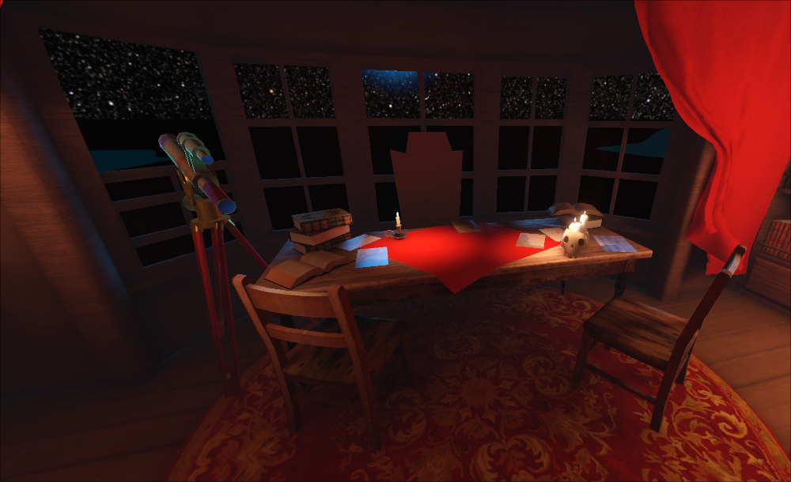

Pirate’s Bounty

Description
The cap'n's hid somethin'! likely his bounty. I created a diversion an' slipped inta his cabin. I must find what he withholds from the crew before he returns. The cap'n won't take too kindly if he sees me. Better be real quick.
Can you find the captain's treasure in this Pirate themed escape room? You have 5 minutes to search for clues and find what will be yours.
Screenshots & Images


Play The Game
Feedback & Comments
"wonderful game! I had a lot of fun" - npkup
"Loved it! Really hope you make a full version. Did you make the assets yourself? Unbelievable you got so much done in a few days! Loved the puzzle as well. Reminds me of those escape the room puzzles" - Triston Griffiron
"I liked the puzzle. Could solve most of the riddles except the telescope one. But I could find the treasure without it. Good job with this one!" - dev_medina
"Great submission! This is a lot different than the other submission games I've played so it was a welcome change of pace. Only issue I has was that the mouse sensitivity kept resetting after each round, but I'm glad you added a sensitivity option in the first place. Well done!" - 𝐦𝐢𝐤𝐞
"My puzzle loving heart was so happy playing this. The puzzles were intuitive and fun and I'm excited play again bc I was able to skip a puzzle. Reminded me of an early 2000's game that I would play with my mom. :) Edit: Loved the other puzzle too. I've done tons of escape rooms and I would be very happy if this setting and series of puzzles was part of one." - Robyn_cvh
"Very impressive work. Addictive but too hard for me. Tried twice and didn't feel like I made any progress. Can the game be finished? I may have to come back to it cause I don't like leaving puzzles unfinished" - arko
"My friend managed to finish it. It works fine. He said the sound setting got reset in every attempt though." - arko
"Many have already pointed it out but the mouse sensitivity is really messed up. I can't turn around to look around the room without having to pause or mess around a lot. That made the flag puzzle especially annoying because I'd look at the cheat sheet and look at the flags, but then when I tried to look back I just couldn't. I spent a while on the constellations because I didn't realize that the password wasn't in the same order as the carvings on the telescope. After I assembled all 3 of the maps I couldn't figure out what to do. I assume it has to do with the globe but couldn't figure it out unfortunately. Still, this is a really good \"escape room\" type puzzle game, I really felt like I was in an escape room" - AbelGameDev
"This is my kind of game, I really enjoyed solving these puzzles and the art and polish were fantastic, let alone for a jam game. As others said, my initial sensitivity was super low and reset with each attempt which was a little frustrating. In general I don’t love a timer on my puzzle solving, it tends to add stress in a way that takes away from the fun. In this case though it wasn’t a huge deal since most of what you had to collect was information instead of items, so it was easy to get back to where I left off. I would love to play a bigger game in this style!" - Nathan Wiles
"Really fun puzzle game, i enjoyed the time constraint and the fact that knowing the answers lets you skip how to find them. Only negatives i really have is that settings reset after the level restarts which is a very small thing, and i couldnt find a secret ending other than just finding the bounty but maybe thats just a skill issue lol." - Ciano001
"Fun little escape room! Glad to see some pirate representation what with all the cowboys haha. I will admit, it absolutely took me too long to figure out the scribbles, but the hint system set me right. Game had the right atmosphere and the time pressure kept things tense. Nice work :D" - Oggie Rock
"FANTASTIC GAME!!!! in fact, you inspired me for one of my games 10/10" - HyperGlitch
"okay, also you know under my coment is the game I submited right, or do you mean your too bissy to try my game" - HyperGlitch